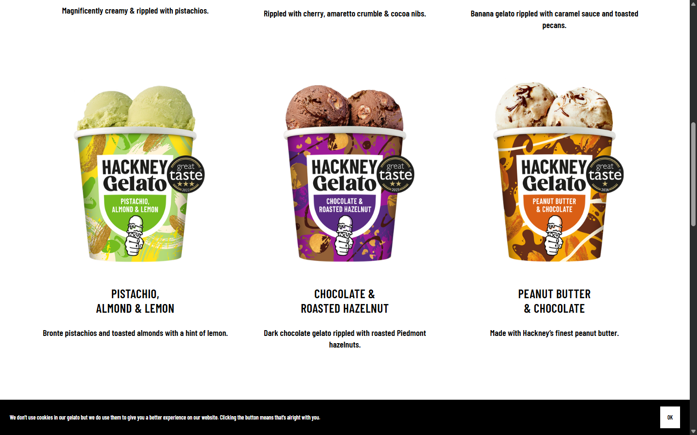
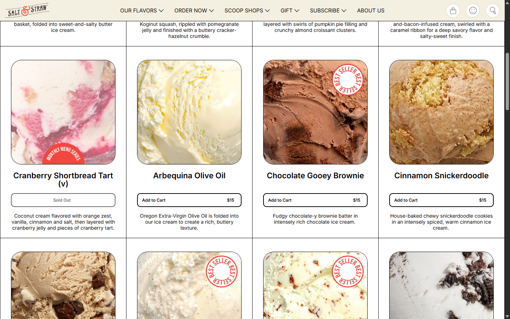
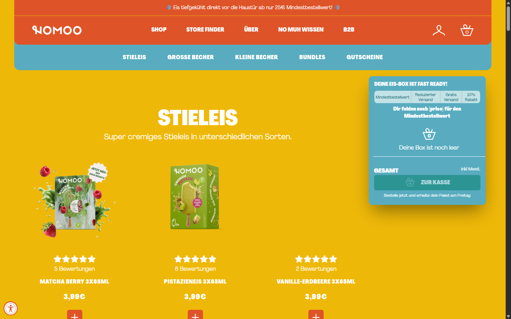
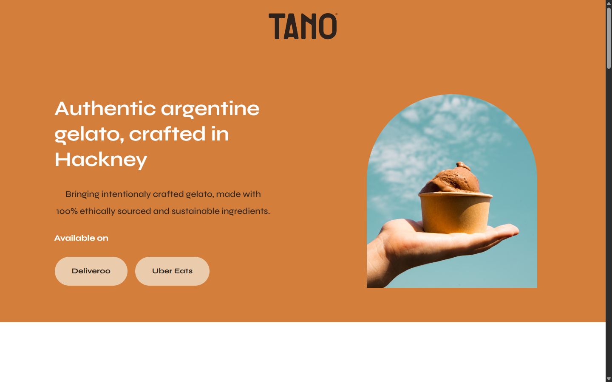
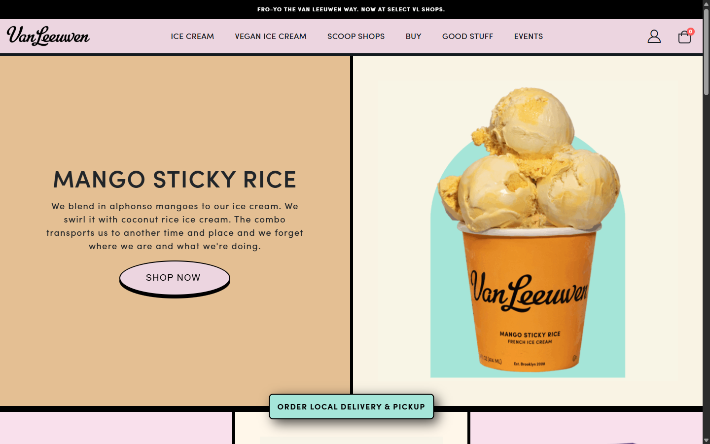
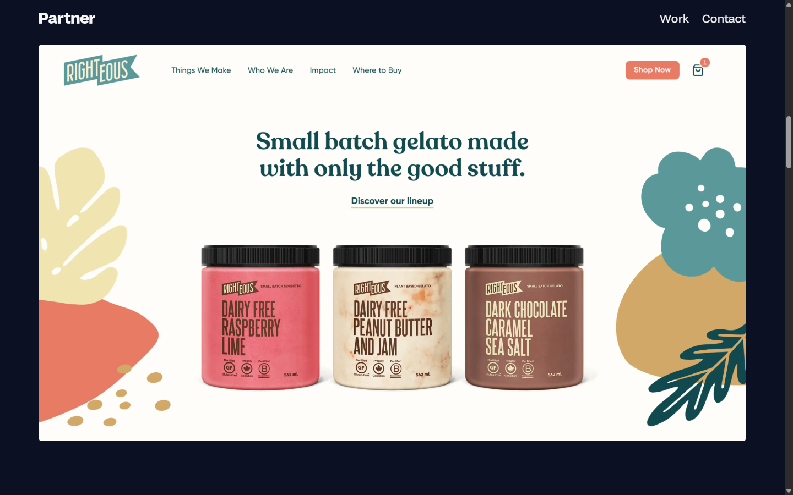

Three visual directions
German ice cream store · Phase 1 research · 18 November 2026
Select an image to inspect the original screenshot or a brand name to visit its source. The swatches below each board are proposed project colors.
Craft in the product details
A neutral setting lets packaging, light and texture convey how the ice cream was made.





Typography and imageryInstrument Serif for short headlines and Archivo for product details. Use straight-edged cards, fine borders, a consistent background and soft side lighting.
Fit and trade-offsStrong for comparing prices and sizes or telling a local maker’s story. Similar pale tubs can be difficult to distinguish at a distance. This direction depends on distinctive photographs and a documented origin story.
Flavor as the first impression
A saturated field and a single memorable image suit seasonal campaigns with short names.






Typography and imagerySyne for display and DM Sans for purchasing. Pair broad color fields and rounded buttons with cutout packs or a hand-held cup.
Fit and trade-offsQuick flavor recognition suits a youthful range or ice pops. Saturated surfaces and a persistent basket compete for space on mobile. German prices and allergen details need a quiet reading area.
Expressive flavors, clear purchasing
Give each flavor its own image treatment while keeping the name, size, price and action in predictable positions.



Typography and imageryFraunces for display and DM Sans for body text and prices. Use restrained curves, consistent pack angles and a second photograph to show texture.
Fit and trade-offsBalances product personality with room for German copy and shipping details. It requires consistent photography and disciplined color use. The packaging must supply enough character to distinguish the brand.